Refinement of the existing local implementation. Warm ivory, forest green, restrained gold, serif headings and architectural photography retained. All imagery and project content are illustrative. Forms create local previews only.
Paired captures use the same viewport dimensions. Select an image to open it at full size. Browser validation covers 320, 390, 768, 1024 and 1440px.
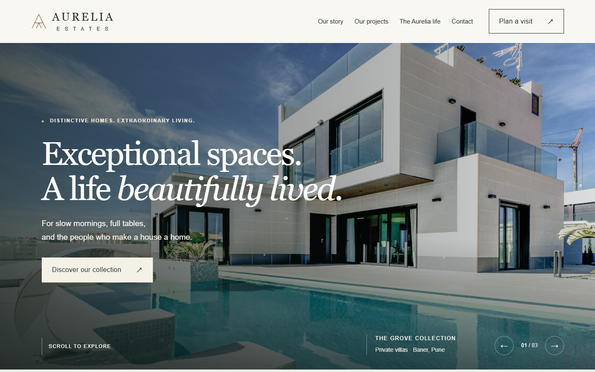
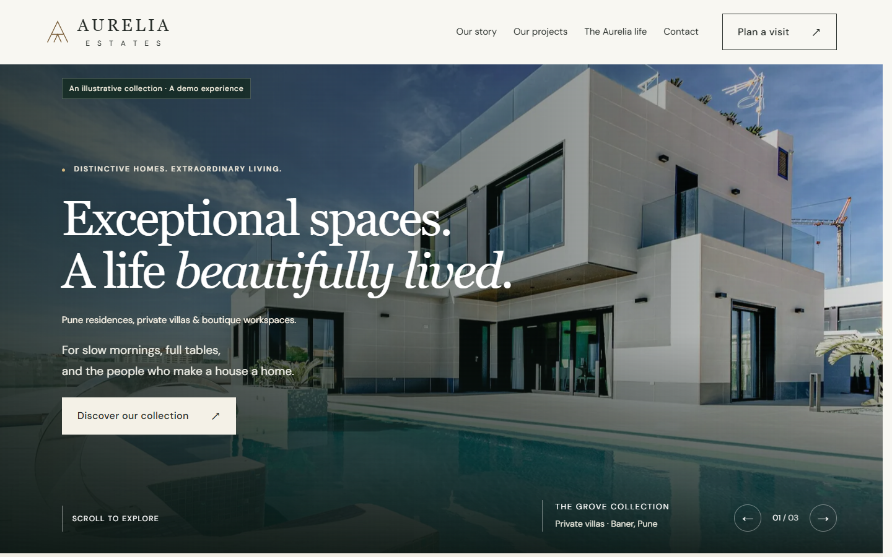
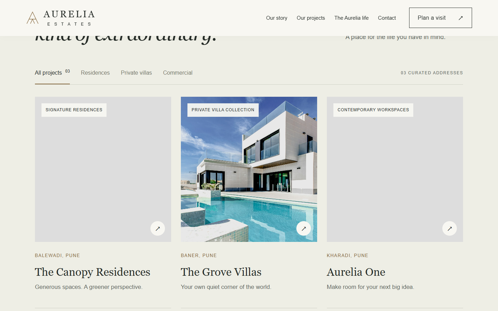
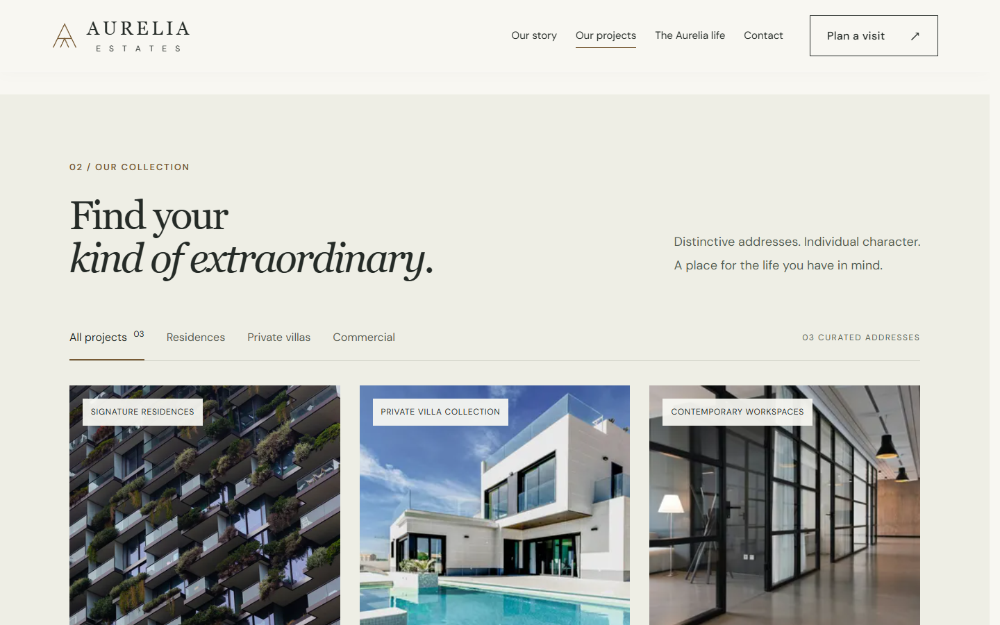
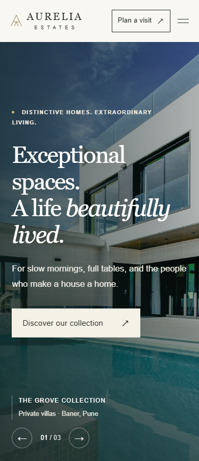
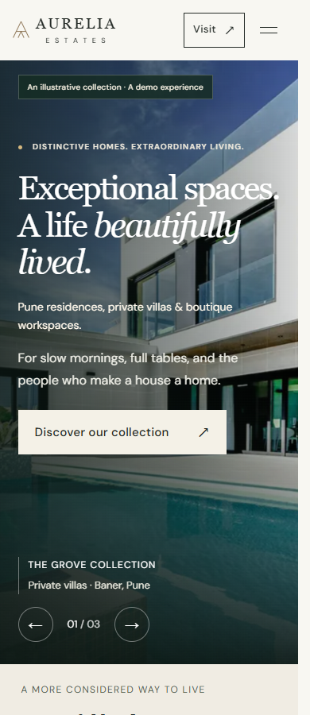
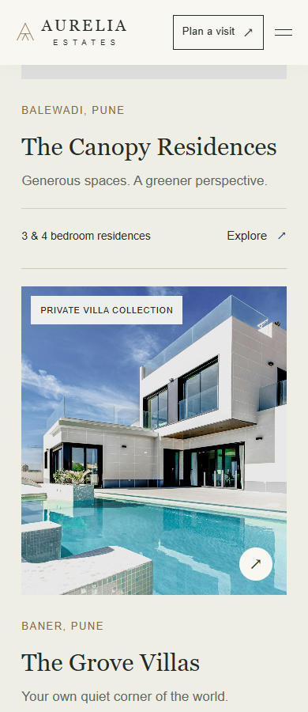
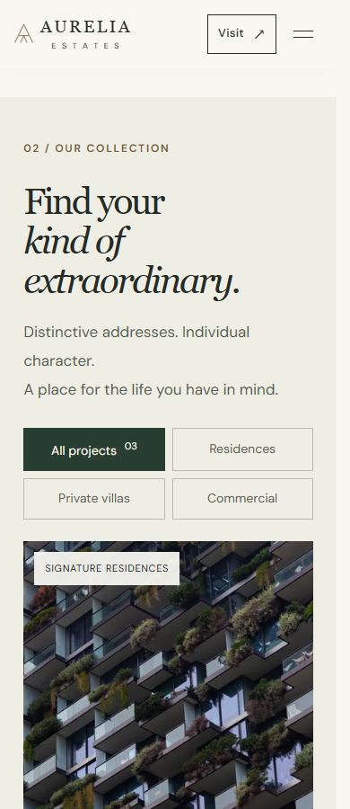
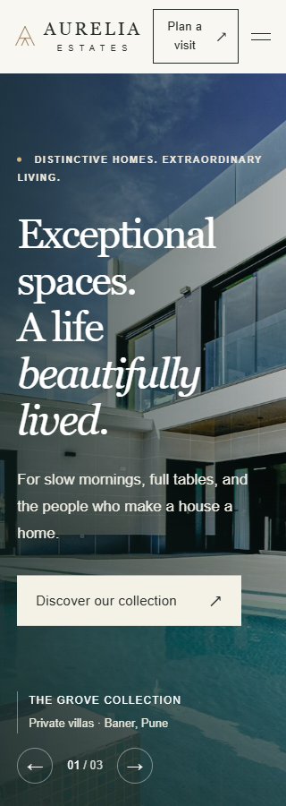
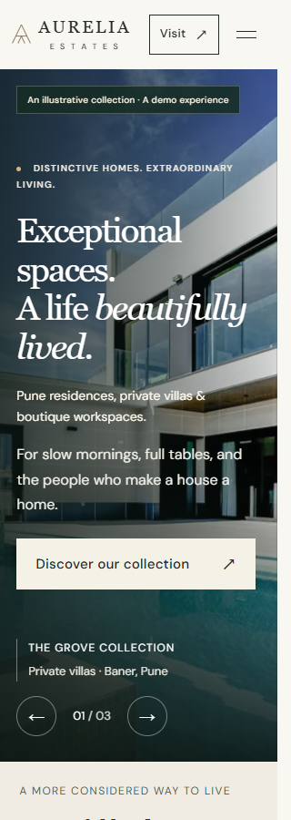
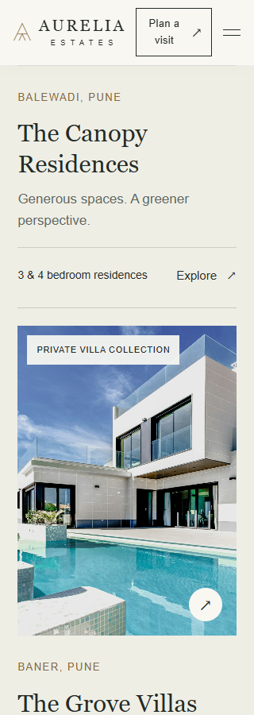
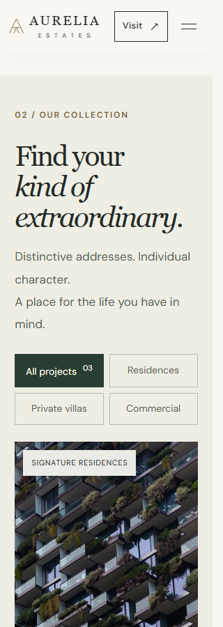
Desktop single result · Mobile single result · 768px arrival · 1024px arrival